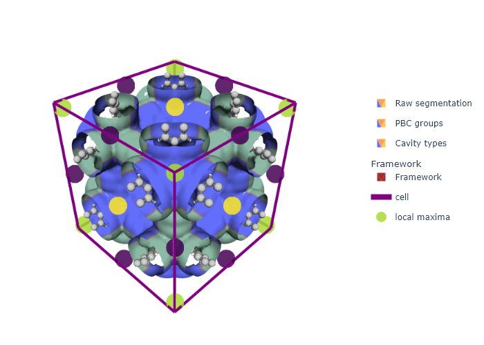
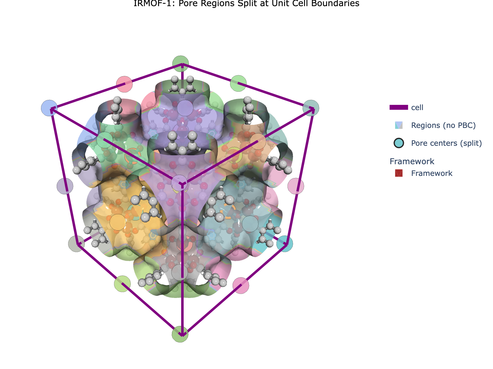
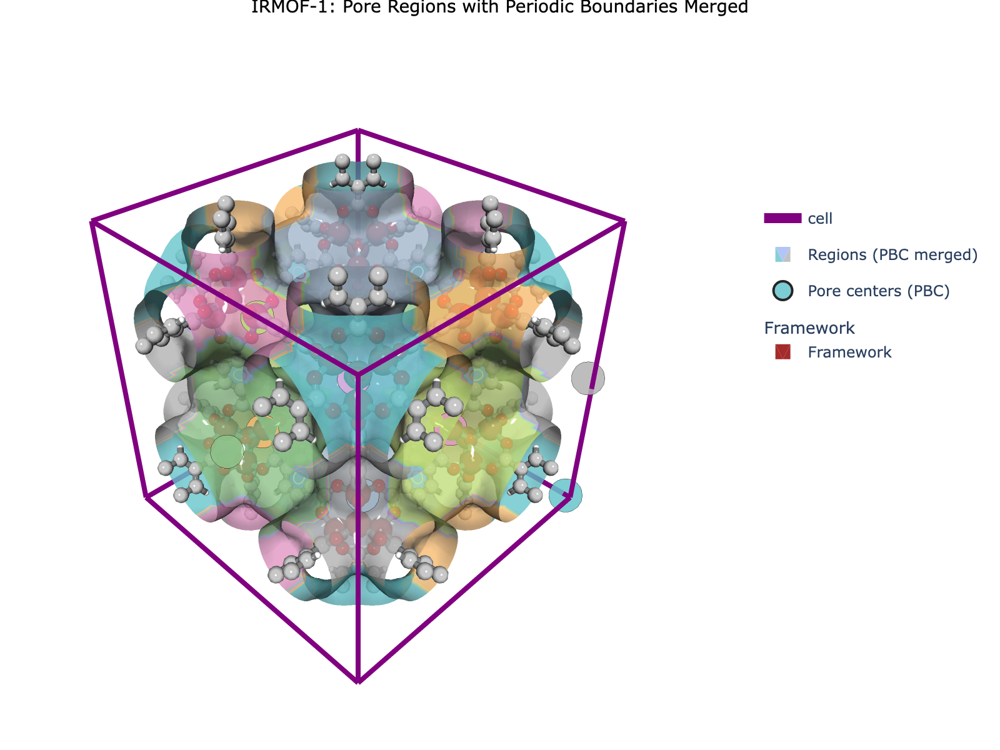
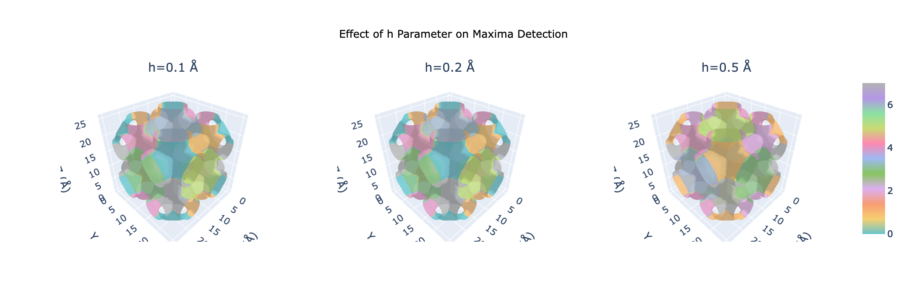
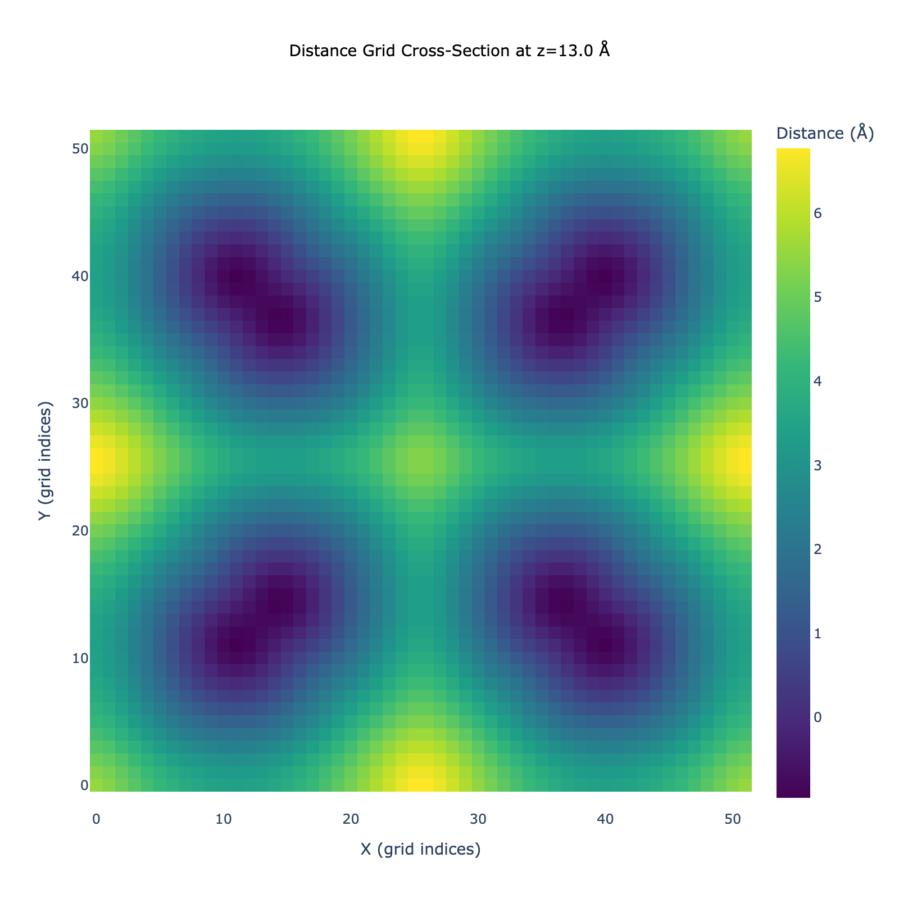
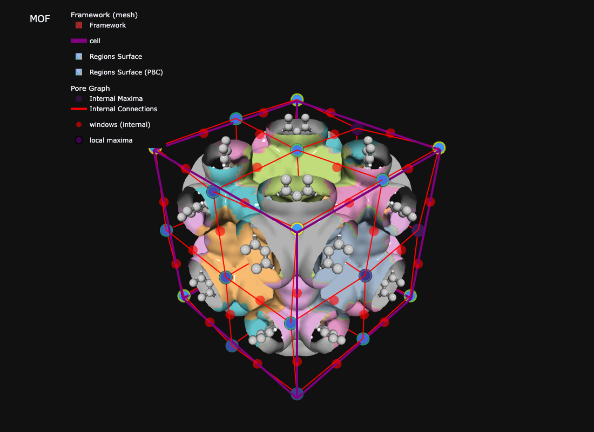
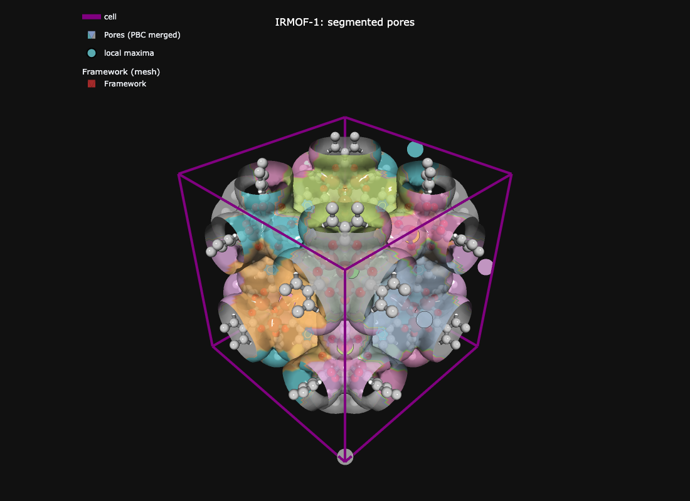

How region segmentation breaks pore space into discrete pockets — maxima detection, watershed, and PBC handling
Overview
Region segmentation breaks the void space of a nanoporous material into discrete pockets, each centered on a local maximum of the distance field. It is the conceptual bridge between the distance grid (a continuous scalar field) and the pore graph (a discrete graph you can analyze with NetworkX).
This tutorial covers the why behind the algorithm: what maxima and watershed do, why periodic boundary conditions (PBC) matter, and which parameters to tune. For the hands-on three-call pipeline, see the Quick Start. For defaults and safe ranges of every parameter, see Tuning and safe ranges.
The Core Question
Segmentation answers: “Which pore does this voxel belong to?”
Imagine the distance field as a landscape:
🎯 Local maxima → pore centers (peaks where a probe would sit)
🏔️ Watershed boundaries → pore walls (ridges between adjacent valleys)
💧 Voxels → assigned to the basin of the nearest maximum

Pockets as watershed basins
This metaphor — pour water into the inverted distance field, label each voxel by which basin it drains into — is exactly what watershed segmentation does.
Why We Need Periodic Segmentation
Crystalline materials repeat across unit cell boundaries, but pores don’t respect those boundaries. A large pore sitting at the corner of a cubic cell appears as 8 fragments (one per corner) when you segment without PBC handling. Physically, those 8 fragments are one pore cut off by the box.

Split regions at boundaries
Periodic segmentation solves this by:
Padding the grid so maxima near edges can “see” their periodic images
Identifying which maxima are periodic images of the same pore
Assigning the same label to all images
Trimming back to the original unit cell
The result: the 8 corner pieces merge into a single pore.

Merged regions with PBC
Concept 1: Maxima Detection (Finding Pore Centers)
The first step is to find the local maxima of the distance field. These are the pore centers.
The challenge: noise vs. features
A real distance grid has:
Noise from grid discretization (atom responsible for nearest distance can jump abruptly, causing distance values to wobble)
Real features: small pockets, large channels, tunnels
Surface roughness that would spawn spurious maxima if treated as features
A naive “every voxel that’s higher than its 26 neighbors” pass would give you hundreds of fake pockets. We need a selective approach.
h-maxima
The classic tool is h-maxima from scikit-image: keep only those local maxima that stand at least h units above their surroundings. Smaller peaks get suppressed. The parameter h is the persistence — how significant a peak has to be to count.
# Conceptual: keep peak P iff (value(P) - value(any neighbor)) >= h# Smaller h -> more, smaller pockets# Larger h -> fewer, larger pockets

Effect of h on maxima detection
Selective smoothing
MOFography’s Rust backend adds a layer on top of h-maxima: selective smoothing. The idea is to smooth the distance field with a spatially-varying Gaussian kernel that:
Does not smooth small features (distance < preserve_threshold) — they are real pockets
Smooths heavily for large features (distance > smooth_threshold) — this is roughness in channel walls that should not produce maxima
Linearly interpolates the smoothing radius in between
After smoothing, h-maxima runs on the cleaned-up field. The result is cleaner pore centers with fewer spurious ones.
The three smoothing parameters you can tune:
Parameter
Default
Effect
preserve_threshold
3.0 Å
Features below this distance are not smoothed (kept as pockets)
smooth_threshold
6.0 Å
Features above this distance are smoothed at max_smooth_radius
max_smooth_radius
2.0 Å
Cap on the smoothing radius (grid units)
Concept 2: Watershed Segmentation
Once maxima are found, watershed segmentation assigns every void-space voxel to one of them.
The water-filling analogy
Take the (inverted) distance field — maxima become valleys
Pour water simultaneously into each valley
Where water from two valleys would meet, raise a “dam” — that is the watershed boundary
When the water covers everything, each voxel is in the basin of exactly one maximum
Equivalently, in MOFography, the watershed assigns each void voxel to the nearest maximum, where “nearest” is geodesic (respecting the topology of the void). The output is a 3D integer array where every void voxel has a region label.

Cross-section of segmentation
With and without PBC
You get two region arrays from the same call:
Array
PBC handling
Use case
regions_pbc
✅ Merged (all periodic images share a label)
Property averaging, visualization, most analyses
regions
❌ Split (each periodic image is its own region)
Detailed pore graph, ML, non-periodic systems
For most analyses of crystalline MOFs, use regions_pbc. The number of unique pores is simply regions_pbc.max().
The Single API Call
The whole pipeline — distance grid prep, selective smoothing, maxima detection, PBC grouping, watershed, connection detection — happens inside do_periodic_segmentation_rust(). It takes the distance grid and the ASE atoms, and returns a dictionary of 15 keys.
Show code
import mofography as mgrfrom ase.io import readimport numpy as np# Step 1: load the structureatoms = read("IRMOF-1.cif")print(f"Loaded {atoms.get_chemical_formula()}, {len(atoms)} atoms")print(f"Cell: {atoms.cell.cellpar()[:3].round(2)} Å")
Loaded C192H96O104Zn32, 424 atoms
Cell: [25.83 25.83 25.83] Å
Show code
# Step 2: compute the distance grid (see distance_grid.qmd for details)spacing =0.5dgrid = mgr.dgrid_from_atoms_rust(atoms, spacing=spacing)print(f"Grid: {dgrid.shape}, void max: {dgrid.max():.1f} Å")
Grid: (52, 52, 52), void max: 7.5 Å
Show code
# Step 3: run periodic segmentation — one call replaces 5-7 manual stepsdgrid_f32 = dgrid.astype(np.float32)seg = mgr.do_periodic_segmentation_rust( dgrid_f32, atoms, mask_thickness=0.05, # void-space threshold (Å) — default and recommended; anything closer to framework is "wall" h=0.2, # h-maxima persistence (Å) — keep only peaks this tall min_distance=1.5, # min separation between distinct maxima (Å) threshold_abs=1.5, # absolute height threshold — ignore maxima shallower than this preserve_threshold=3.0, # selective smoothing: don't smooth features below this (Å) smooth_threshold=6.0, # selective smoothing: fully smooth features above this (Å) max_smooth_radius=2.0, # selective smoothing: max Gaussian radius spacing=spacing, compute_connections=True, # also detect windows between regions disable_tqdm=True,)
Show code
# What did we get?print(f"Pockets (PBC-grouped): {len(seg['maxima_pbc'])}")print(f"All maxima (with periodic images): {len(seg['all_maxima'])}")print(f"Unique regions influencing unit cell: {len(seg['unique_regions'])}")print(f"Window connections: {len(seg['connections'])}")print(f"PBC equivalence groups: {len(seg['pbc_groups'])}")
Pockets (PBC-grouped): 8
All maxima (with periodic images): 125
Unique regions influencing unit cell: 27
Window connections: 300
PBC equivalence groups: 8
The 15 Output Keys
do_periodic_segmentation_rust returns a flat dictionary. Group by purpose:
Maxima arrays (pore centers)
Key
What it is
Typical size
maxima_pbc
One representative per unique pore (after PBC grouping)
Small — your pore count
all_maxima
All periodic images, including those in the padded region
Larger
close_or_inside_maxima
Subset of all_maxima that touch or sit inside the unit cell
Medium
maxima_info
Per-maxima metadata (radius, location, etc.)
Same as all_maxima
maxima_pbc_dict
Maps each PBC representative to the list of its images
Same as maxima_pbc
maxima_relative_locations
Fractional coordinates of every maximum
Same as all_maxima
Region arrays (the labeled voxel grids)
Key
What it is
regions_pbc
3D array, PBC-merged — same pore = same label (use this for most analyses)
regions
3D array, PBC-split — each periodic image is a distinct label
unique_regions
Region labels that have at least one voxel in the unit cell
close_or_inside_regions
Region labels touching or inside the unit cell
Connections (the pore graph)
Key
What it is
connections
List of window connections between regions — used to build the pore graph
Bookkeeping
Key
What it is
pbc_groups
Lists grouping all_maxima by their PBC equivalence class
input_params
Echo of the parameters you passed (for reproducibility)
dgrid
The distance grid used (only present if return_dgrid=True)
mat_atoms
The ASE atoms object echoed back
Accessing the Results
The four keys you will reach for most often:
Show code
maxima_pbc = seg['maxima_pbc'] # one representative per unique poreall_maxima = seg['all_maxima'] # all periodic imagesregions_pbc = seg['regions_pbc'] # the labeled voxel grid (PBC-merged)pbc_groups = seg['pbc_groups'] # which images belong to which poreprint(f"maxima_pbc : {maxima_pbc.shape} -> one entry per unique pore")print(f"all_maxima : {all_maxima.shape} -> all periodic images")print(f"regions_pbc : {regions_pbc.shape} -> labeled voxel grid")print(f"pbc_groups : {len(pbc_groups)} groups")# Number of unique pores in this materialn_pores =int(regions_pbc.max())print(f"\nNumber of unique pores: {n_pores}")
maxima_pbc : (8, 3) -> one entry per unique pore
all_maxima : (125, 3) -> all periodic images
regions_pbc : (52, 52, 52) -> labeled voxel grid
pbc_groups : 8 groups
Number of unique pores: 8
The clever indexing trick
Maxima are reindexed by importance, so the first regions.max() entries of all_maxima are exactly the ones that influence the unit cell:
Show code
# "maxima inside the unit cell" — same as close_or_inside_maxima[:regions.max()]unit_cell_maxima = all_maxima[: int(regions_pbc.max())]print(f"Maxima influencing the unit cell: {len(unit_cell_maxima)}")
Maxima influencing the unit cell: 8
Inspecting connections
Each connection is a tuple of region indices plus a geometry record:
Show code
# First three connectionsfor c in seg['connections'][:3]:print(c)
Maxima closer than this get merged. Higher → fewer pockets.
threshold_abs
1.5 Å
Ignore peaks shallower than this. Higher → only large pores.
mask_thickness
0.05 Å
Voxels closer to framework than this are “wall”, not pore. 0.05 is the default and recommended; raise to ~0.15 only to drop wall slivers. Keep it well below the plotting isovalue.
Advanced smoothing parameters
If you see spurious small maxima in the middle of large channels, or you are losing real small pockets, tune the selective-smoothing triad:
Parameter
Default
Effect
preserve_threshold
3.0 Å
Below this distance, smoothing is off (real pockets preserved)
smooth_threshold
6.0 Å
Above this distance, smoothing is at max_smooth_radius
max_smooth_radius
2.0 Å
Cap on smoothing kernel (Å)
Lower smooth_threshold to smooth more aggressively; raise preserve_threshold to protect more small pockets.
PBC handling parameters
Parameter
Default
Effect
extra_padding
5 Å
Extra padding beyond the standard +5 Å, for very large pores
wall_thickness
0.05
Fraction of cell — controls how “wall” is defined near boundaries
minimum_window_separation
auto
Min separation for two windows to count as distinct
watershed_backend
"rust_det"
One of rust_det | rust_bucket | rust_det_parallel | skimage
min_region_size
0.001
Fraction of padded volume — regions smaller than this are dropped
Recipes
Symptom
Try
Too many tiny pockets
Increase h (e.g. 0.2 → 0.4), or increase min_distance
Missing small pockets
Decrease threshold_abs (1.5 → 1.0) or h (0.2 → 0.1)
Spurious maxima in large channels
Decrease smooth_threshold or increase max_smooth_radius
Use dgrid_from_atoms_rtree_rust (R-tree, less RAM)
Visualization
The fastest way to see what you got is show_mof_plotly, which lays framework, isosurface, regions, and maxima in one figure (static preview below, interactive version linked):
Show code
# Interactive 3D — framework + regions + maxima# plot_surface_isovalue is a distance-from-framework contour (Å); keep it well above mask_thicknessfig = mgr.show_mof_plotly(seg, atoms, framework_atoms=atoms, stylize=True, plot_surface_isovalue=1.5)fig.write_image("tutorial_images/region_segmentation_overview.png", width=1100, height=800) # static preview for the docs
No node props provided, using default set: [position, scaled_position, element and atomic_number]
No edge properties provided. Use the default set: [bond_order, bond_type]
[TIMING batched_mesh_for_atoms] 472 atoms, 1024 bonds | spheres: 0.00s, cylinders: 0.00s, concat: 0.00s | total faces: 212480
No node props provided, using default set: [position, scaled_position, element and atomic_number]
No edge properties provided. Use the default set: [bond_order, bond_type]

IRMOF-1: framework, isosurface, regions, and maxima
No node props provided, using default set: [position, scaled_position, element and atomic_number]
No edge properties provided. Use the default set: [bond_order, bond_type]

Custom figure built from lower-level helpers
Common Pitfalls
Issue
Fix
dgrid dtype error from Rust
dgrid = dgrid_from_atoms_rust(...) already returns float32 — do not pass a float64 grid from Dask.
Wrong unit cell conventions
Use the Rust backend (dgrid_from_atoms_rust) — it handles non-orthogonal cells correctly. Avoid the deprecated _gpu and _cpu_no_aabb variants.
Pore count doesn’t match expectation
Check regions_pbc.max() (not len(maxima_pbc)) — both should agree, but regions_pbc.max() is the ground truth.
Some regions missing from unit cell
Increase extra_padding — large pores may need more room around the cell to be detected.
Next Steps
Quick Start — the canonical three-call pipeline (load → grid → segment → visualize) in one page
Distance Grid — how the distance grid is computed, with method comparisons
Tuning and safe ranges — defaults, safe ranges, and symptoms for every segmentation parameter
Pore Graph — once you have regions and connections, build the Region Adjacency Graph